WHAT ARE SELF DRIVING/AUTONOMOUS CARS?
An autonomous car is a vehicle capable of sensing its environment and operating without human involvement. A human passenger is not required to take control of the vehicle at any time, nor is a human passenger required to be present in the vehicle at all. An autonomous car can go anywhere a traditional car goes and do everything that an experienced human driver does.
Imagine getting into your car, typing - or, better yet speaking - a location into your vehicle’s interface, then letting it drive you to your destination while you read a book, surf the web or nap. this is what a self driving car does.
companies like "Google" and "Tesla" are making advancements in this promising new technology
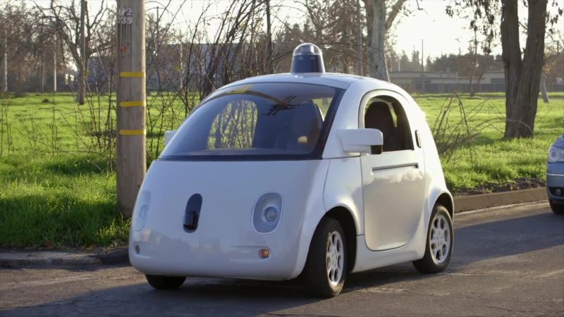
GOOGLE'S WEYMO SELF DRIVING KOALA CAR
|
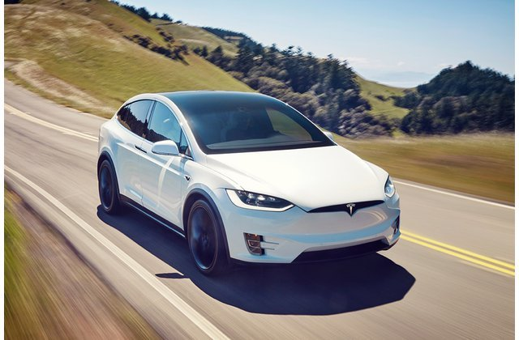
TESLA'S SEMI SELF DRIVING CAR
|
|---|
HOW DOES IT WORK ?
Autonomous cars rely on sensors, actuators, complex algorithms, machine learning systems, and powerful processors to execute software.Autonomous cars create and maintain a map of their surroundings based on a variety of sensors situated in different parts of the vehicle. Radar sensors monitor the position of nearby vehicles. Video cameras detect traffic lights, read road signs, track other vehicles, and look for pedestrians. Lidar (light detection and ranging) sensors bounce pulses of light off the car’s surroundings to measure distances, detect road edges, and identify lane markings. Ultrasonic sensors in the wheels detect curbs and other vehicles when parking.Sophisticated software then processes all this sensory input, plots a path, and sends instructions to the car’s actuators, which control acceleration, braking, and steering. Hard-coded rules, obstacle avoidance algorithms, predictive modeling, and object recognition help the software follow traffic rules and navigate obstacles.
A PHOTOGRAPHIC TIMELINE:
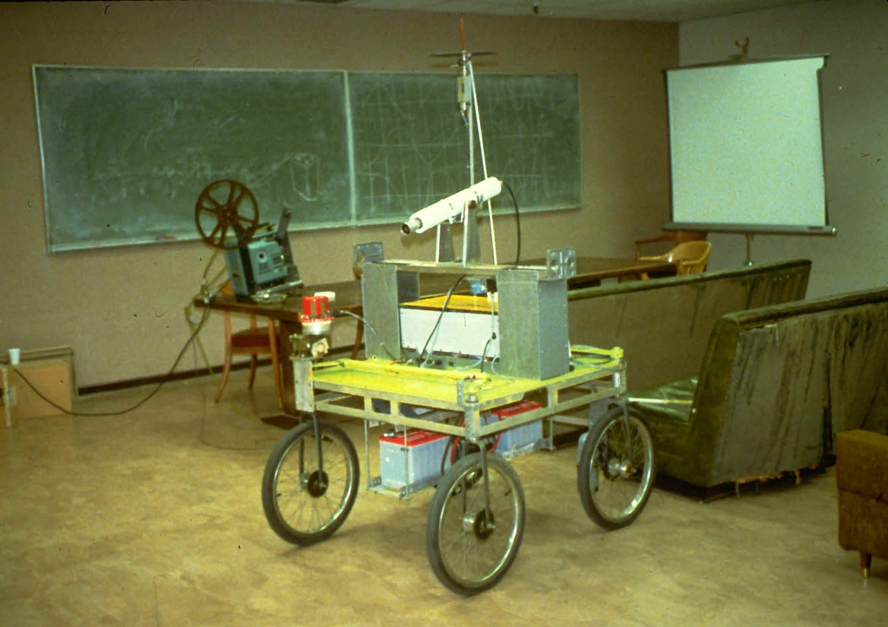
Cart: People have been dreaming about self-driving cars for nigh a century, but the first vehicle that anyone really deemed “autonomous” was the Stanford Cart. First built in 1961, it could navigate around obstacles using cameras and an early version of artificial intelligence by the early 70s. One problem: It needed 10 to 15 minutes to plan every one-meter move.
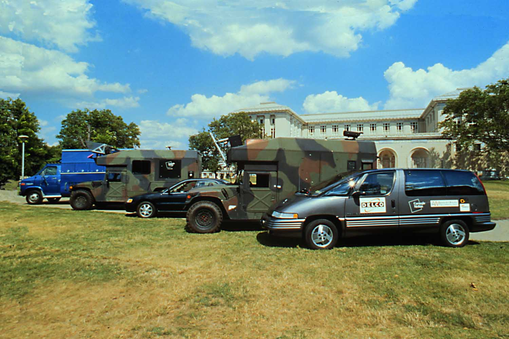
NavLab 5: In 1995, Carnegie Mellon researchers Todd Jochem and Dean Pomerleau drove across the country in NavLab 5, a 1990 Pontiac Trans Sport rigged up to drive itself. Over nearly 3,000 miles, the van did steer itself, using a windshield-mounted camera to look for lane lines, while the humans handled the gas and brakes.
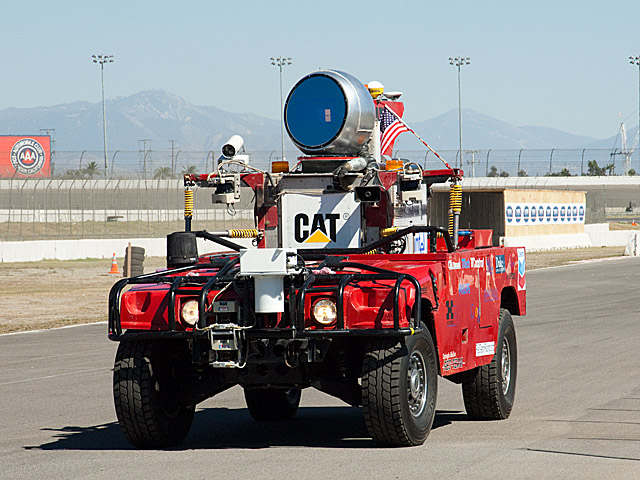
Sandstorm: In the early 2000s, the Defense Advanced Research Projects Agency decided to accelerate self-driving development with an open-to-all-comers race across the Mojave Desert. None of the finalists made it anywhere near the finish line, but the race created a new community of people interested in cracking the challenge. The best performer was Carnegie Mellon’s Sandstorm, a Humvee that used cameras, laser scanners, radars, and a 1,000-pound box full of electronics to pick its way through tricky terrain.
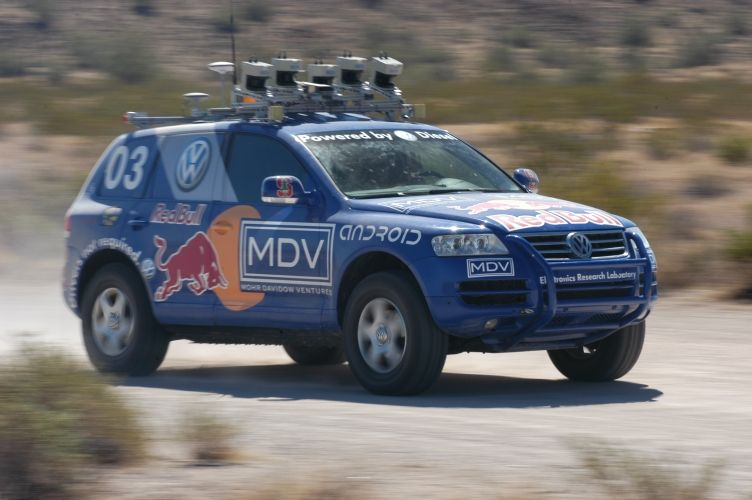
Stanley: When Darpa repeated the Grand Challenge in 2005, five vehicles completed the course. First among them was Stanford’s Stanley. The Volkswagen Touareg used the by-now standard combo of cameras, radars, and laser scanners, but relied heavily on machine learning to understand what it was looking at and how to navigate.
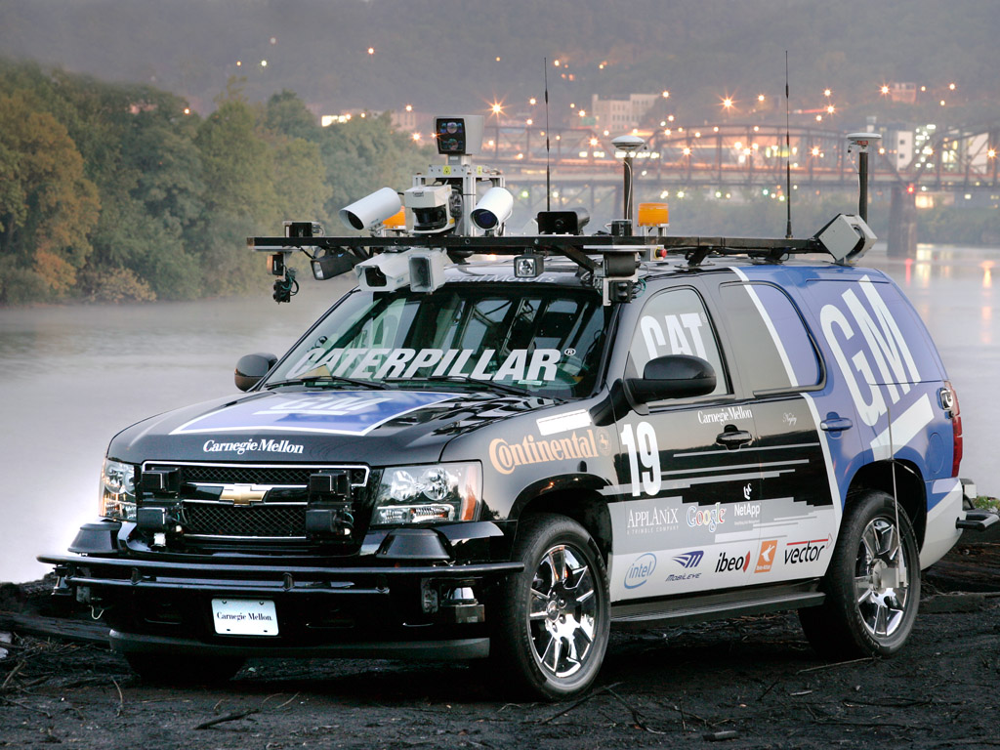
Boss: The third and final Darpa contest was the 2007 Urban Challenge, which was staged on an abandoned Air Force base. This time, Carnegie Mellon—working with General Motors—took first place with Boss. The sensor-laden Chevy Tahoe was aggressive, pushing but not breaking the rules of traffic. And like all the top performers, it used a new lidar laser-scanning system made by Velodyne, which offered a detailed, 360-degree view of the world.
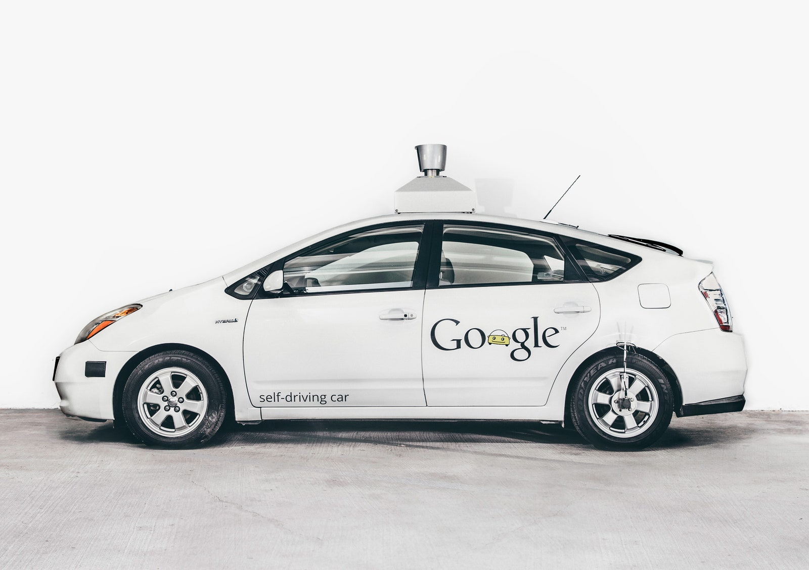
Google Prius: In 2009, Google’s Larry Page asked Sebastian Thrun, creator of Stanford’s Stanley, to build him a self-driving car—and assigned him 1,000 miles of California roads to tackle in autonomous mode. After hiring the best minds from the Darpa Grand Challenges, Thrun rigged up a Prius with the requisite sensors. A year and a half later, the team had conquered the “Larry 1,000.”
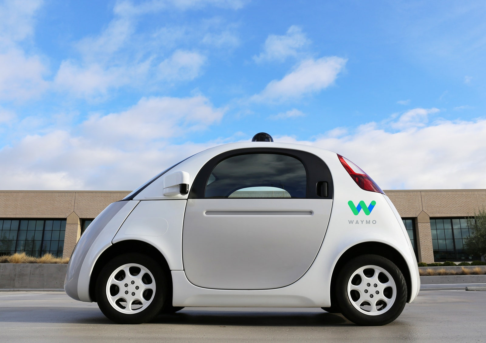
Google Koala Car: For the next few years, Google dominated the self-driving conversation, gradually pushing the technology to a point where the auto industry could no longer ignore it. In 2014, it made clear its distaste for human drivers with the Firefly (everyone else called it the koala, or pod, car), a vehicle without a steering wheel or pedals. Three years later, after the self-driving team spun out of Google and became Waymo, it was retired in favor of Chrysler Pacifica minivans.
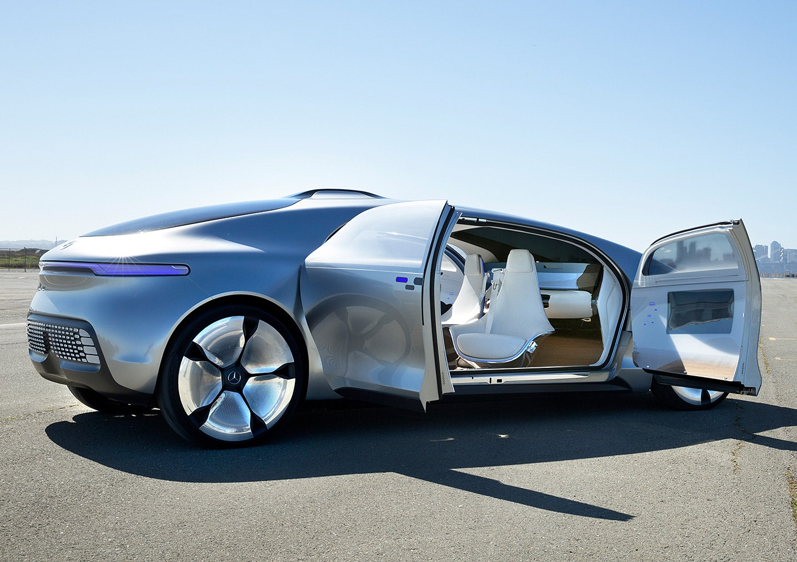
Mercedes F 015: By 2015, the big automakers were finally getting serious about autonomous tech. Mercedes-Benz (which did a lot of self-driving research in the 1980s) got particularly excited about the future with the F 015 ‘Luxury in Motion’, a gleaming ingot of a car with seats that swivelled around for better conversation, windows that doubled as touchscreens, and a steering wheel for those who just can’t let go.
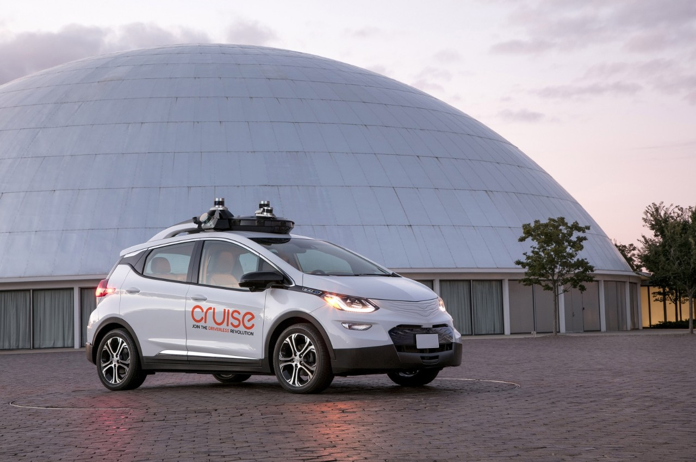
Chevy Bolt (no steering wheel): Eleven years after helping Carnegie Mellon with Darpa’s Urban Challenge, GM fully embrace the robo-future with a version of the Chevy Bolt EV that features neither steering wheel nor pedals. This is the car the company will launch as a self-driving taxi sometime in 2019.
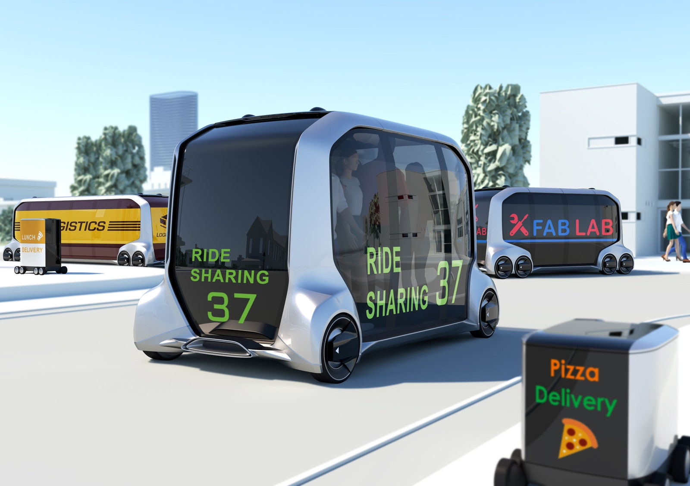
Toyota e-Palette: Before long, autonomous tech will free car designers from today’s constraints. Toyota explored that future with the e-Palette, a platform for a vehicle that can do everything from shuttling people to hauling pizzas to serving as a rolling hotel or medical center. It’s one of the boldest declarations yet that we are moving to a world where vehicles are much, much more than things we drive.
WHAT ARE THE BENEFITS OF AUTONOMOUS CARS ?
- Reduce traffic congestion (30% fewer vehicles on the road)
- Cut transportation costs by 40% (in terms of vehicles, fuel, and infrastructure)
- Improve walkability and livability
- Free up parking lots for other uses (schools, parks, community centers)
- Reduce urban CO2 emissions by 80% worldwide